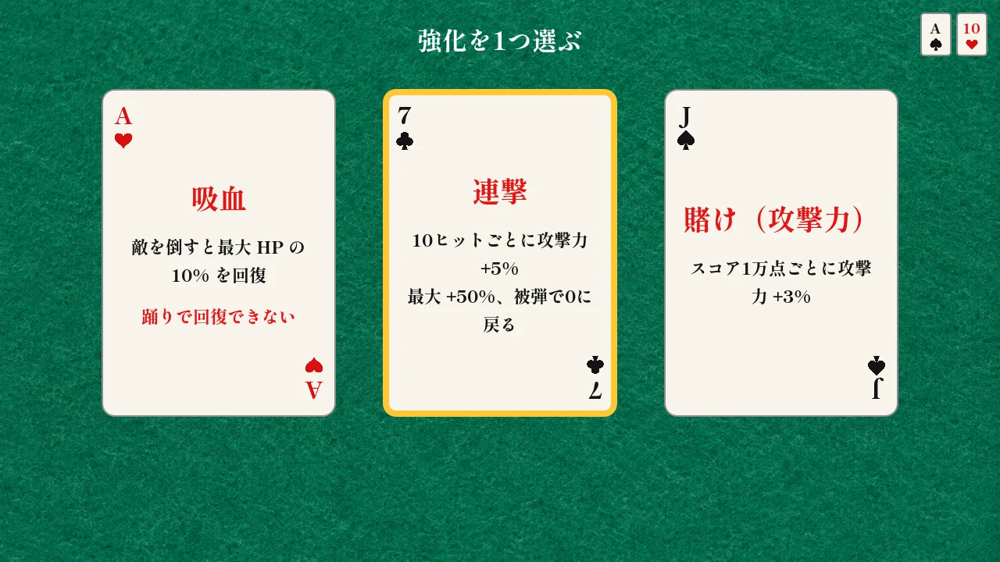
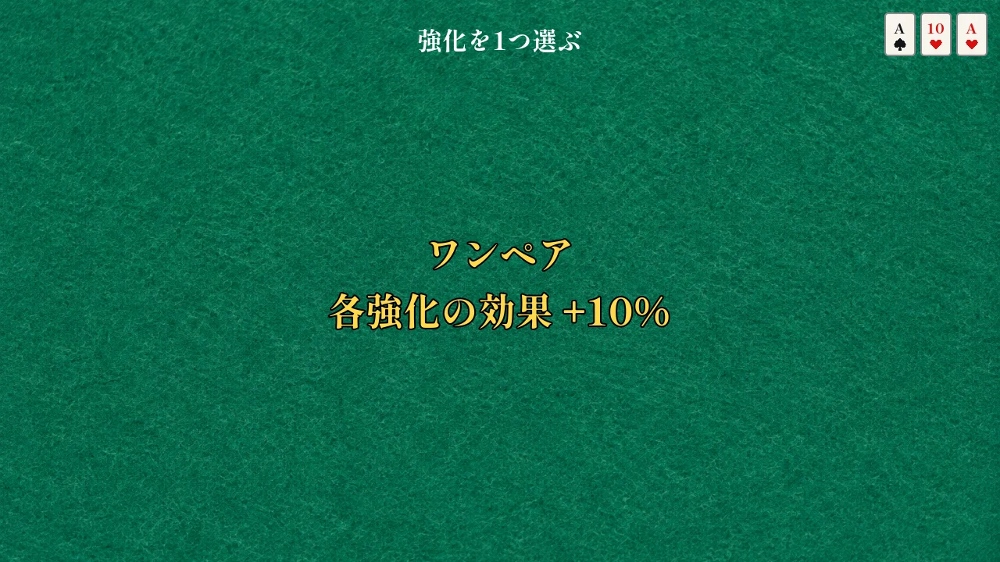

早振り
近接の攻撃速度 +20%
移動速度 -10%
近接
面と面の間に、3 枚のカードから強化を 1 つ選ぶ。カードにはトランプのマークと数字が付き、取ったカードでポーカーの役ができると、持っている強化の効果がまとめて上がる。カードは全 51 種。

| 役 | 各強化の効果 |
|---|---|
| 役なし | 変わらない |
| ワンペア | +10% |
| ツーペア | +20% |
| スリーカード | +30% |
| ストレート | +40% |
| フラッシュ | +50% |
| フルハウス | +60% |
| フォーカード | +80% |
| ストレートフラッシュ | +100% |
手札の中で一番強い役を取る。ストレートは A-2-3-4-5 と 10-J-Q-K-A のどちらも作れるが、K-A-2 のように回り込む並びは作れない。

| 面に入る時点の手札 | 作れる役 |
|---|---|
| 1 面：1 枚 | なし |
| 2 面：2 枚 | ワンペア |
| 3 面：3 枚 | ＋スリーカード |
| 4 面：4 枚 | ＋ツーペア、フォーカード |
| 5 面：5 枚 | すべての役 |
| 6 面：6 枚 | すべての役（6 枚のうち 5 枚で一番強い組） |
役は取るたびに決まり、次の面から効く。前より強い役になったときだけ、画面の真ん中に役の名前と上げ幅が出る。札は増える一方なので、役が弱くなることはない。
近接の攻撃速度 +20%
移動速度 -10%
近接の攻撃力 +20%
移動速度 -10%
回避の再使用待ち +200%
近接の射程 +15%
移動速度 -10%
ふっとばし距離 +50%
近接の攻撃速度 +50%
回避の再使用待ち +500%
近接の攻撃力 +100%
射撃が使えない
近接の射程と吹っ飛ばし +50%
攻撃の後隙 +50%
射撃の連射速度 +20%
被弾すると必ずダウン
射撃の攻撃力 +20%
移動速度 -10%
回避の再使用待ち +200%
射撃が敵を貫通する
射撃の命中後、近くの敵へ1回跳ね返る
射撃が当たると 15% の確率で3秒まひ
射撃の攻撃力 +100%
弾数 -50%、移動速度 -50%、攻撃速度 -10%
移動速度 +20%
回避の再使用待ち +200%
回避の再使用待ち時間なし
敵を倒すと3秒間、移動速度と攻撃速度 +50%
吹っ飛んだ敵が壁や画面端にぶつかると追加ダメージ
吹っ飛んだ敵が他の敵に当たると、その敵にダメージとのけぞり
回避中に敵にダメージ
回避の再使用待ち +200%
倒した敵が小爆発して周りにダメージ
10ヒットごとに攻撃力 +5%
最大 +50%、被弾で0に戻る
近接・射撃が当たると 20% で毒
毒を持つ敵の攻撃で毒になる確率 +50%
攻撃力 +50%
移動速度 -50%
回避の再使用待ち +500%
移動速度 +50%
攻撃速度 -10%
のけぞらない。即死耐性
移動速度 -20%
回避できない
スコア1万点ごとに攻撃力 +3%
スコア1万点ごとに移動速度 +3%
スコア1万点ごとに攻撃速度と連射速度 +3%
銃で構えたときに、レーザーサイトを照射
敵を10体倒すごとに攻撃力 +3%
敵を10体倒すごとに移動速度 +3%
敵を10体倒すごとに攻撃速度と連射速度 +3%
回避で敵の攻撃をすり抜けると、1秒間攻撃力 +30%
回避の距離 +30%
回避の再使用待ち +100%
倒れた敵への攻撃力 +50%
踊りの回復量 +50%
敵を倒すと最大 HP の 10% を回復
踊りで回復できない
HP 30% 以下のとき攻撃力 +50%
銃の即死の確率が 2倍
弾数 -30%
敵のガードを崩しやすくなる（のけぞり耐性を 30% 下げる）
手札の中でどのカードの代わりにもなる（役が作りやすくなる）
このカード自体の効果は無い
コンボの締め（フック・ハイ・刀の三段目）の攻撃力 +50%
コンボの次段の受付時間 +50%
必殺で使う HP -50%
必殺の範囲とダメージ +50%
必殺で使う HP +50%
まひ・毒の敵への攻撃力 +40%
敵の攻撃が自分に集まり、攻撃力 +20%
被ダメージ +20%
自キャラクターと味方キャラクターの間の敵に10秒ごとに 10,000 のダメージ
味方に攻撃が当たらない
攻撃力 +150%
最大 HP が1になる
攻撃速度 +60%
回避できない、踊れない